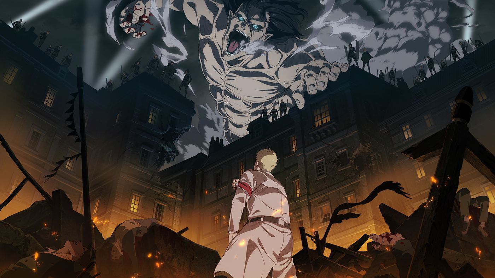

Attack on Titan

Attack on Titan
is a Japanese manga
series written and illustrated by Hajime Isayama.
It is set in a world where humanity lives inside cities surrounded by enormus walls that protect them from
man-eating humanoids referred to as Titans
.
Characters of Attack on Taitan
| Characters |
| Names |
| First Name |
Last Name |
| Eren
| Yeager |
| Levi |
Ackerman |
| Mikasa |
Ackerman |
| Erwin |
Smith |
Lists:
Ordered List
Seasons
- Season 1
- Season 2
- Season 3
- Season 4
Unordered List
Favourite Characters
- Eren Yeager
- Mikasa Ackerman
- Levi Ackerman
- Erwin Smith
Defination List
Types of Polices
- Survey Corps
-
Ranked among the most elite soldiers, they were tasked with attempting to reclaim territory that has been
lost to the Titans. Despite being the most well trained, they often come under dispute from those within the
Walls and are constantly under threat of being disbanded since they suffer high losses, and usually fail to
supply results.
- Military Police Brigade
- The Military Police were in charge of keeping order inside the Walls and protecting the ruling monarch,
currently Historia Reiss. Due to their important function as guardians of the most important humans, only
the top 10 trainees from a graduating class were permitted to join them.[4] Despite recruiting from only the
best, they were shown to be corrupt and often incompetent due to the nature of their work inside the Walls,
far away from Titans.
For more information,click here
To go to page without image,click here
Attack on Titan now available on Netflix at 500$
200$
Season 3